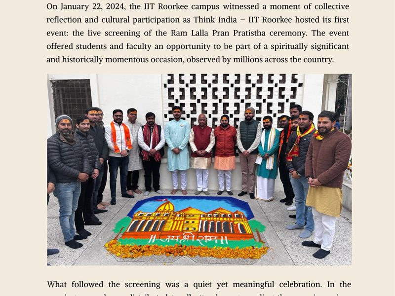

CulturalRam Mandir Pran Pratistha Screening
Live screening of the Ram Lalla Pran Pratistha ceremony — a spiritually significant event organized as Think India IITR's very first event. 800+ campus community members attended; Deepotsav and prasad distribution followed.